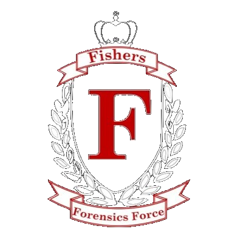

|  | ||||||||||
| Fishers High School Speech and Debate | ||||||||||
| Calendar | | | Competitor Info | | | Parents | | | Practice | | | Contact Info | | | Wall of Fame |
State Finalists National Qualifiers Ana Gaston - Congress Champion Ana Gaston - Big Questions Debate Ana Gaston - Impromptu Ana Gaston - Congress Curren Gauss - Drama Darrell Fischer - United States Extemp Darrell Fischer - United States Extemp Julia Garrison and Curren Gauss - Duo Gabe Glover - Impromptu Champion Kaylee Demlow - Drama Gabe Glover - United States Extemp Champion Maddie Butler - Congress Jillian Meyer - Informative Malia Ulmer - Congress Joey Cerone and Max Keithley - Original Performance Champions Myra Kivett - Programmed Oral Interpretation Joey Cerone - Broadcasting Reagan Frank - Informative Julia Garrison - Poetry Reagan Frank - Oratory Maddie Butler - Discussion Taylor Boledovich - Humor Max Keithley - Broadcasting Thasneem Najum - Informative Quinn Lowry - Congress Thasneem Najum - Informative Maddie Butler, Matthew Koeske, Abedemi Aregbe, Lexi Esterle, and Callie Johnson - World Schools Debate Champions Coaches - Paul Kennedy, Scott Black, Matt Follman, Emily Walden, Carah Kennedy State Finalists National Qualifiers Brayton Wilds and Kaleigh Stohler - Duo Champions Abidemi Aregbe and Rhiannon Johns - Policy Debate Ana Gaston - Congress Ally Marshall - Humor David Ho - Impromptu Ana Gaston - Congress David Ho - International Extemp Champion Brayton Wilds and Kaleigh Stohler - Duo Gabe Glover - Impromptu Champion Carl Tensmeyer - Drama Gabe Glover - United States Extemp Cassie Meyer - Programmed Oral Interpretation Hannah Flint - Poetry David Ho - International Extemp Jillian Meyer - Informative Guatam Fotedar - International Extemp Joey Cerone - Broadcasting Jasmine Mercado - Original Oratory Kara Porzuczek and Emma Trent- Original Performance Jillian Meyer and Cassie Meyer- Duo Maddie Butler - Discussion Champion Jasmine Mercado - Original Oratory Mason Kluemper - Humor Julia Momper - Original Oratory Max Keithley and Ally Marshall - Duo Kaleigh Stohler - Drama Max Keithley - Broadcasting Kara Porzuczek - Programmed Oral Interpretation Ross DeLong - Broadcasting Champion Maddie Butler - Congress Taylor Boledovich - Original Performance Mason Kluemper - Humor
Khunsha Ahmed, Maddie Butler, Riley Crump, Rhiannon Johns, Coaches - Paul Kennedy, Eduardo Torres, Scott Black, Jordan Nel, Natalie Jacobs, and James Whelan State Finalists National Qualifiers Ana Gaston - Congress Ally Marshall and Everett Kalman - Duo Brayton Wilds and Kaleigh Stohler - Duo Ally Marshall - Humor Claire Vahary - Prose Ana Gaston - Congress David Ho - International Extemp Brayton Wilds - Drama Evan Hodes - Informative Connor O'Leary and Grace Balasko - Duo Grace Balasko and Connor O'Leary - Duo Champions David Ho - International Extemp Lauren David - United States Extemp Champion Evan Hodes - International Extemp Maddie Butler - Congress Lauren David - Congress Maddie Butler - Discussion Lauren David - United States Extemp Max Keithley - Broadcasting Maddie Butler - Congress Olivia Jacobs - Prose Mason Kluemper - Humor Peyton DiGreggory - Drama Noah Alderton and Zane Jud - Policy Debate Ross DeLong - Broadcasting Champion Noah Alderton, Kennedy Hervey, Olivia Jacobs, Zane Jud, Matthieu Picardy - World Schools Debate Champions Coaches - Paul Kennedy, Matt Rund, Eduardo Torres, Natalie Jacobs, and Jon Colby State Finalists National Qualifiers Alex Brown - Impromptu Alex Brown - Congress Alex Brown - United States Extemp Ally Marshall - Humor Claire Cassidy - Drama Claire Cassidy - Drama Daniel Rodriguez and Rachel Roberts - Memorized Duo Kendall Gardner - International Extemp Grace Balasko - Prose Kendall Gardner - Original Oratory Kaleigh Stohler and Ross DeLong - Scripted Duo Lauren David - Original Oratory Kendall Gardner - International Extemp Champion Lauren David - United States Extemp Lauren David - United States Extemp Lauren Meadows - Congress Lauren David - Original Oratory Lynn Pratt and Brayton Wilds - Duo Lauren Meadows - Congress Mason Kluemper - Humor Lauren Meadows - Discussion Noah Alderton - Congress Mac VanTassel - Declamation Mike Folta - Broadcasting Champion Riley Timko - Broadcasting Sam Neidermann - Broadcasting Noah Alderton, Sarah Frisbee, Olivia Jacobs, Zane Jud, Matthieu Picardy - World Schools Debate Champions Coaches - Matt Rund, Paul Kennedy, Jon Colby, Christina Ripley, and Eric Joerns State Finalists National Qualifiers Caroline Shanley - United States Extemp Caroline Shanley - Congress Casey Blair - Prose Casey Donovan - World Schools Debate Casey Donovan - Original Performance Claire Cassidy - Drama Claire Cassidy - Drama Champion Emma Rund - World Schools Debate Emma Rund and Trevin Rund - Memorized Duo Haley Clasen - Congress Haley Clasen - United States Extemp Haley Clasen - Original Oratory Hannah Eli - Declamation Haley Clasen - United States Extemp Hannah Eli - Poetry Hannah Eli - World Schools Debate Ire Ana Gerald and Jasmine Johnson - Original Performance Kendall Gardner - IX Top 30 Kendall Gardner - International Extemp Champion Lauren David - United States Extemp Lauren David - Original Oratory Lauren Meadows - Congress Mason Kluemper - Humor Champion Lynn Pratt - World Schools Debate Natalie Jacobs - Discussion Natalie Jacobs - World Schools Debate Sam Neidermann - Broadcasting Thomas Ritz - Congress Thomas Ritz - Impromptu Thomas Ritz - International Extemp Thomas Ritz - International Extemp Coaches - Matt Rund, Paul Kennedy, Jon Colby, and Kaitlyn Thompson State Finalists National Qualifiers Baxter McCormack and Lynn Pratt - Scripted Duo Casey Donovan - Humor Fiyori Kidane - Declamation Champion Emma Rund and Trevin Rund - Duo James Whelan - Declamation Kendall Gardner - International Extemp James Whelan Lauren Meadows - Congress Kendall Gardner - International Extemp Thomas Ritz - Congress Lauren David - United States Extemp Thomas Ritz - International Extemp Natalie Jacobs - Discussion Nicholas Curtis - Impromptu Champion Sam Neidermann - Broadcasting Thomas Ritz - International Extemp Coaches - Matt Rund, Paul Kennedy, Jon Colby, and Kaitlyn Thompson State Finalists National Qualifiers Brittany Sherill and Colin Krummel - Original Performance Champions Brittany Sherill and Colin Krummel - Duo Dustin Meeks - Humor Casey Donovan - Humor Hannah Eli - Declamation Dustin Meeks - Congress Jasmin Johnson and Morgan Johnson - Scripted Duo Dustin Meeks - Humor Tony Sanleben - Broadcasting Dustin Meeks - United States Extemp Coaches - Matt Rund, Paul Kennedy, Jon Colby, and Jim Thorp State Finalists National Qualifiers Dustin Meeks - Humor Dustin Meeks and Brittany Sherill - Duo Jacob Rura - Declamation Champion Dustin Meeks - Humor Kristin McSweeney and Sean Delaney - Scripted Duo Lincoln Clauss - Humor Lincoln Clauss - Humor Lincoln Clauss and Sami White - Duo Lincoln Clauss and Sami White - Memorized Duo Champions Lincoln Clauss - Show Me Excellance Award Sami White - Original Performance Champion Tina Nguyen - Discussion Coaches - Matt Rund, Jim Thorp, and Paul Kennedy State Finalists National Qualifiers Daniel Young and Kristin McSweeney - Scripted Duo Danny Delaney and Sean Delaney - Duo Danielle Renckly - Broadcasting Danny Delaney - Drama Jacob Boris - Original Performance Daniel Young - Drama Lincoln Clauss and Sami White - Memorized Duo Champions Lincoln Clauss - Humor Lincoln Clauss - Humor Champion Lincoln Clauss and Sami White - Duo Coaches - Matt Rund, Jim Thorp, and Paul Kennedy State Finalists National Qualifiers Andrew Neylon - Drama Andrew Neylon - Original Oratory Danielle Renckly - Broadcasting Daniel Young - Drama Danny Delaney and Sean Delaney - Scripted Duo Hannah Hilbert - International Extemp Hannah Hilbert - International Extemp Kristin McSweeney - Drama Kristin McSweeney and Daniel Young - Scripted Duo Lincoln Clauss and Sami White - Duo Lincoln Clauss - Humor Marcus Carrol and Anthony O'Donovan - Duo Lincoln Clauss and Sami White - Memorized Duo Champion Coaches - Matt Rund, Jim Thorp, and Windi Hornsby State Finalists National Qualifiers Andrew Thornton and Sami White - Scripted Duo Lincoln Clauss and Kourtney Cooper - Duo Cory McConville and Audra Casterline - Memorized Duo Cory McConville and Audra Casterline - Duo Andrew Neylon - Oratory Ellen Hoppe and Charli Renckly - Duo Charli Renckly - Drama Andrew Neylon - Original Oratory Lincoln Clauss and Kourtney Cooper - Memorized Duo Sarah Zimmerman and Kyle Kovert - Scripted Duo Ellen Hoppe and Charli Renckly - Memorized Duo Coaches - Matt Rund, Joe Halac, and Jim Thorp Alex Barrett and Sarah Ling - Duo Coady Owens and Kaitlyn Thompson - Duo Kayla Miller - Humor Audra Casterline - Original Oratory Coaches - Matt Rund and Joe Halac Ellen Hoppe and Kayla Miller - Duo Coaches - Matt Rund and Andy Smith |